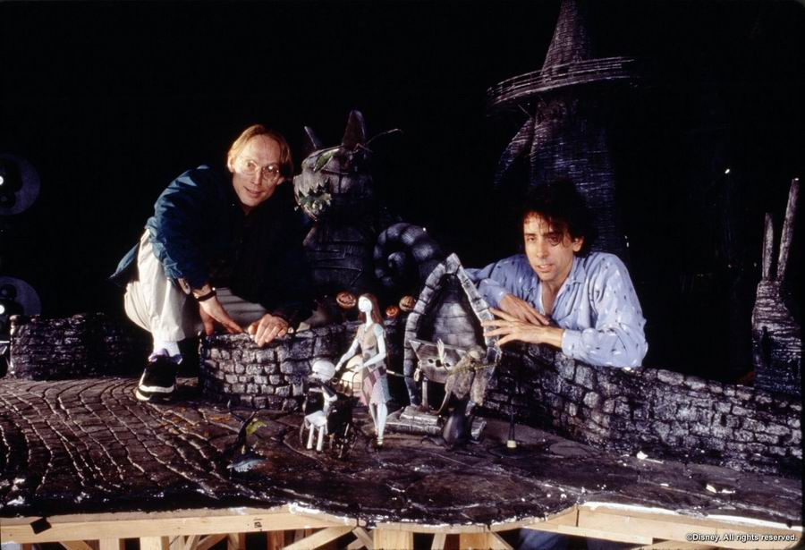

The Making of the Movie
The Nightmare Before Christmas was an ambitious project that took over three years to complete, with the animation process being one of the most intricate aspects of production. Stop-motion animation requires filming individual frames of the characters as they are manipulated by hand. For every second of film, 24 frames were shot, making the process slow and painstaking. The level of craftsmanship that went into creating the movie's characters and sets is truly astounding. From Jack Skellington's hundreds of facial expressions to the elaborate models of Halloween Town, each detail was meticulously designed to bring the eerie, whimsical world to life.
Another key element of the movie's success is its haunting musical score, composed by Danny Elfman. Elfman not only wrote the songs but also provided the singing voice for Jack Skellington. The movie's music plays a crucial role in establishing the mood, with songs like "This is Halloween" and "What's This?" becoming iconic in their own right. The combination of innovative animation, a compelling story, and Elfman's unforgettable music made *The Nightmare Before Christmas* a groundbreaking film in both the animation and musical genres.